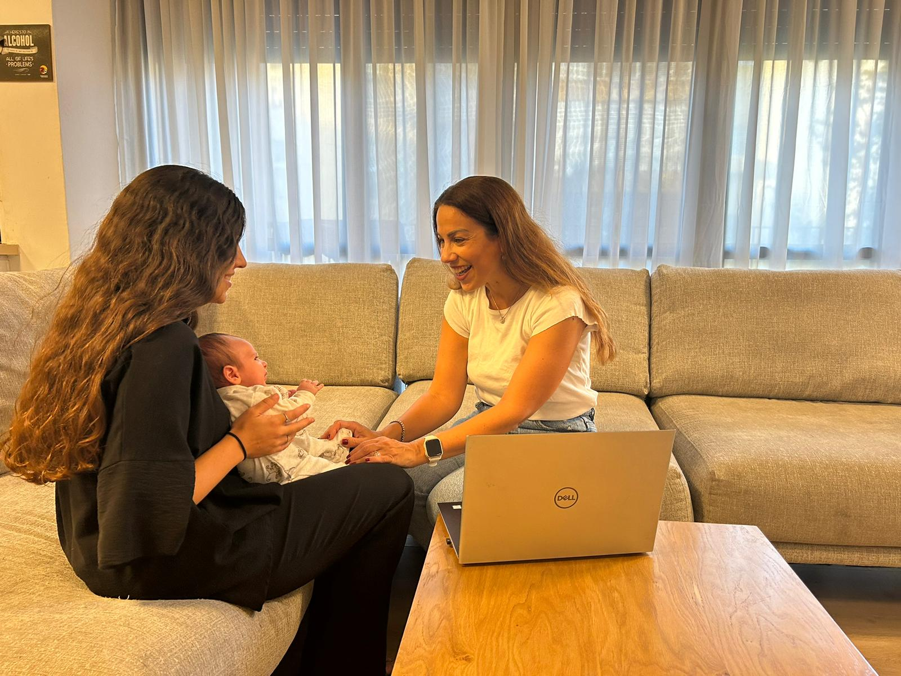

בגישה הוליסטית שמחזקת את הקשר עם התינוק, הדרך לשקט ושלווה מתחילה כאן
שמי עירית אייזיק, אמא ל-3 ילדים וסבתא לשניים מהממים. אני כאן כדי ללוות אותך במסע להורות רגועה ושינה טובה יותר. עם ניסיון רב בעבודה עם ילדים ותואר שני בחינוך, באמצעות הגישה ההוליסטית-היקשרותית שמותאמת אישית לכל משפחה, ומבוססת על חיזוק הקשר הרגשי עם הילד שלך
★ מסלול מקיף לחודש שלם: מפגשים אישיים בבית או אונליין. בניית תוכנית מותאמת אישית. ליווי יומיומי עם זמינות מלאה לשאלות ותמיכה
★ פגישת ייעוץ חד-פעמית: ניתוח הקשיים שלך ושל התינוק. כלים פרקטיים לשינה טובה ולחיזוק הקשר המשפחתי
עירית, בזכותך התינוק שלי נרדם בקלות ולילה שלם! קיבלתי כלים שלא רק עזרו לשינה, אלא גם לשקט הפנימי שלי כהורה. ממליצה בחום
תודה על הסבלנות, ההבנה והכלים הפרקטיים. בזכותך אנחנו מבינים את התינוק שלנו ומרגישים בטוחים יותר כהורים